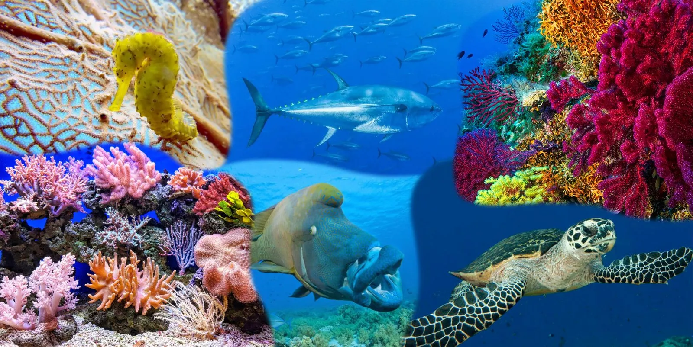
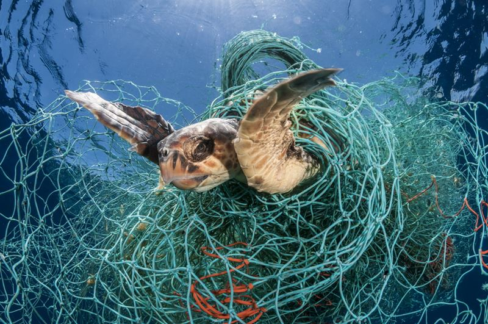
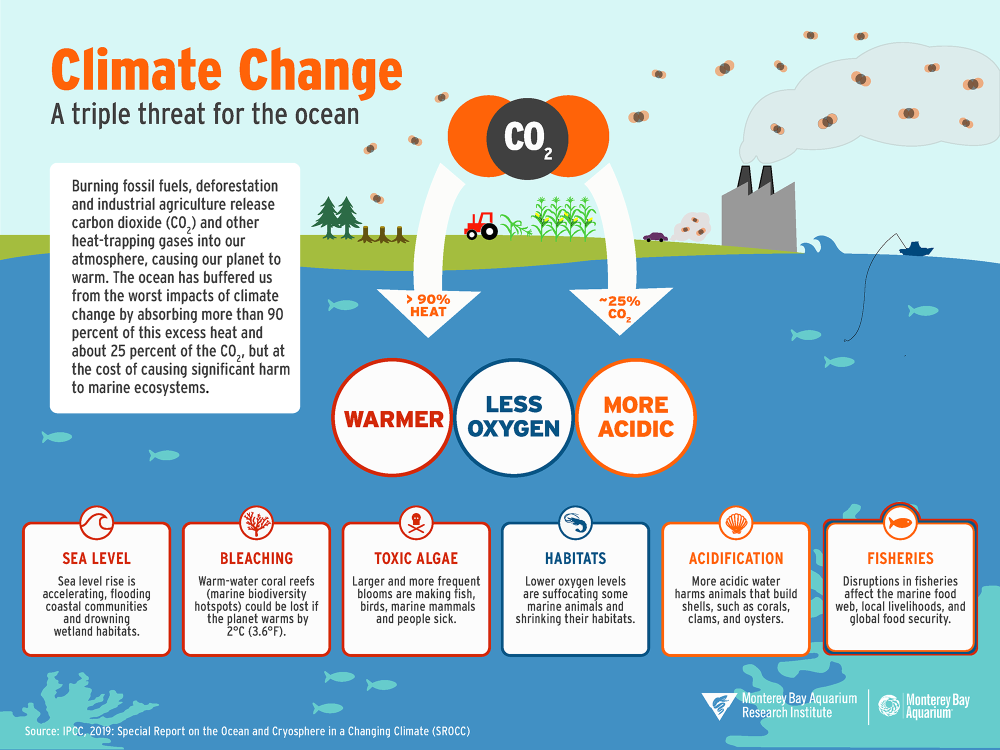
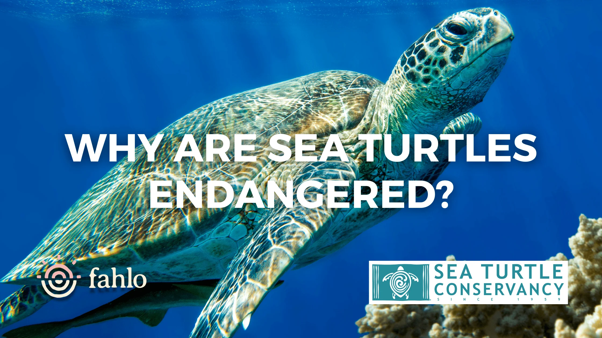
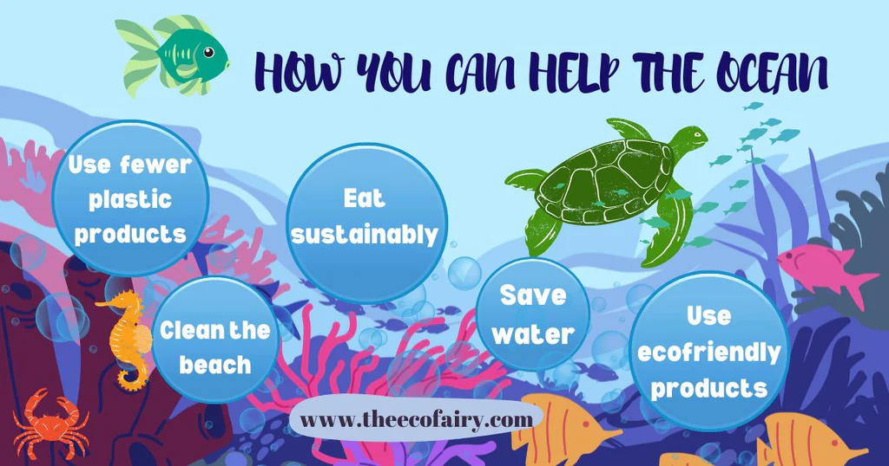

Marine species play an essential role in the health of the oceans and ecosystems. However, many species are currently at risk due to various human-induced and environmental factors.

Marine species face pollution threats such as plastics, oil spills, and toxic waste, which harm their habitats and health.

Overfishing depletes fish populations, disrupts marine ecosystems, and endangers the survival of several species.

Climate change is affecting ocean temperatures, acidification, and sea levels, putting many marine species at risk.

Sea turtles are critically endangered due to habitat loss, poaching, and bycatch in fishing nets.
Whales, particularly species like the blue whale and humpback whale, face threats from ship strikes, entanglement, and climate change.
Sharks are threatened by overfishing, finning, and loss of prey due to declining fish populations.

Various efforts are being made to protect marine species, including the establishment of marine protected areas, enforcing anti-poaching laws, and reducing plastic pollution. However, everyone can help by supporting sustainable fishing, reducing waste, and educating others about the importance of marine conservation.
